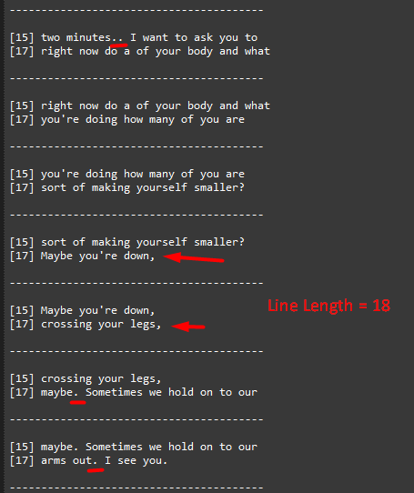

stl version v3.8.8.0
Date: 2024.09.19
Issues in Milestone
---
- #33 Subtitle building rework. Changing the punctuation behavior
Features
---
Subtitle building rework. Changing the punctuation behavior
1. Fixed the situation when the subtitle started from the second line. Now all subtitles start from the first line.
2. After completing attempts to `subtitle_extract_attempts` to get a subtitle from the buffer, provided that there are no new incoming transcriptions and there are no words in the buffer, an empty subtitle is sent.
Example:
----------------------------------------
[8] yourself smaller? Maybe you're.
[14] Sometimes we hold on to our arms
----------------------------------------
[8] Sometimes we hold on to our arms
----------------------------------------
[8]
[14]
----------------------------------------
3. Added new parameters to `ApplicationSettings.json`
1. subtitle_punctuation_line_length - Position in the line after which words after a punctuation mark will be wrapped to a new line
2. subtitle_punctuation_line_start - Line number from which to start wrapping words after a punctuation mark to a new line```
Full Settings:
{
"grpc_service_ip": "127.0.0.1",
"grpc_service_port": 9740,
"subtitles_timeout_ms": 2000,
"subtitle_lines": "8,14",
"subtitle_start_mode": 1,
"subtitle_write_mode": [0],
"subtitle_srt_path": "./tmp/subtitle.srt",
"subtitle_latest_path": "./tmp/latest.sub",
"subtitle_gen_line_mode": 0,
"subtitle_extract_attempts": 0,
"subtitle_line_length": 35,
"subtitle_punctuation_line_length": 30,
"subtitle_punctuation_line_start": 2,
"newfor": {
"max_bytes_for_line": 35,
"is_use_length_37": true
}
}
4. The process of wrapping text to the next line when a punctuation mark is encountered has been changed
The `,` symbol has been added, after which the wrapping to the next line will also be performed.
The symbols after which the wrapping to the next line will be performed: `. , ! ? ;`
Two conditions have been added for wrapping text to the next line after a punctuation mark
1. The punctuation mark must be at a position in the line greater than or equal to the value specified in `subtitle_line_punctuation_length`
2. The current line must be greater than or equal to the value specified in `subtitle_punctuation_line_start`. Line numbering starts from 1. The line number for Newfor is specified in the `subtitle_lines` value.
